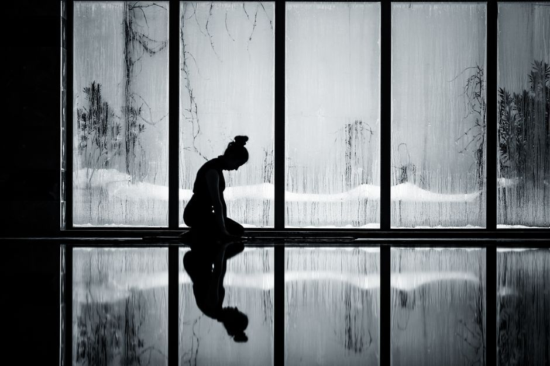

Stress and the Body
Can Stress Cause Rosacea Flare-Ups? Why Your Face Flushes
Yes, stress can trigger rosacea flare-ups. The National Institute of Arthritis and Musculoskeletal and Skin Diseases (NIAMS) lists emotional stress among the most common rosacea triggers, alongside sun, heat, and spicy foods. Stress does not cause rosacea itself, but it can bring the redness and flushing to the surface during heavy seasons.
What is rosacea?
NIAMS describes rosacea as a long-term inflammatory skin condition that causes redness and a rash, usually on the nose and cheeks. It may start as a tendency to flush or blush easily, and over time the redness can last longer. Some people also notice small red bumps, thin visible blood vessels, or a tingling or burning feeling.
Rosacea tends to cycle. There are flare-ups, when symptoms get worse, and quieter seasons, when the skin settles. Scientists do not fully know what causes it, though they know inflammation plays a part, and both genes and the environment likely matter.
Why does stress make your face flush?
Think about the last time you felt embarrassed or put on the spot. Heat rushes to your cheeks almost before you have a thought about it. That flush is your nervous system at work. When your body senses pressure, it shifts blood flow and stress chemistry in a split second to help you respond.
For most people, the flush fades once the moment passes. When the skin is already sensitive and prone to inflammation, that same rush can tip it into a flare. And when stress becomes a constant hum rather than a single moment, the body may stay in that state of readiness far longer than it was designed to.
Your skin is an honest witness. It shows on the outside what the nervous system is carrying on the inside. A flare is not a sign that you have failed at skin care or at staying calm. It is a messenger, asking for a little more gentleness.
What are the most common rosacea triggers?
NIAMS lists these common triggers, while noting that triggers vary from person to person:
- Sunlight
- Emotional stress
- Hot or cold weather
- Strong winds
- Strenuous exercise
- Alcohol
- Hot baths
- Spicy foods
- Foods or drinks that are hot in temperature
Notice how many of these are about heat and intensity. A body that is already running hot from stress may have less room to absorb a hot shower, a glass of wine, or a sharp wind on the same day.
A gentle practice: for the next two weeks, keep a short daily note with three lines: how your skin looked, how stressful the day felt, and anything warm, spicy or sunny you met. NIAMS suggests a written record like this as one of the best ways to learn your own triggers.
How can you calm your skin during stressful seasons?
Alongside your doctor or dermatologist's care, NIAMS suggests treating the skin gently: cleansers made for sensitive skin, regular moisturizer, no harsh exfoliants or products with alcohol, and a daily broad-spectrum sunscreen made for the face.
You can also care for the nervous system that sits underneath the skin:
- Cool before you calm. A cool, not cold, cloth across the cheeks and a slow breath out can ease the heat of a stressful moment.
- Slow down the hot habits. Let your tea cool a little and choose a warm rather than hot shower during a flare.
- Give stress an exit. A short walk in the shade, an earlier bedtime, or a quiet prayer tells your body it does not have to stay braced.
- Feed the calm. My post on what foods help with inflammation walks through gentle, whole-food choices.
In my work, I think of the skin as both a boundary and one of the body's drainage pathways, which is why I wrote about how stress affects your skin as a whole. My page on gentle detox support explains how I think about the body's exit routes together, and my inflammation support page shows how I walk alongside people whose bodies feel inflamed and overwhelmed.
When should you see a doctor about rosacea?
See a doctor or dermatologist to confirm what is going on, since other skin conditions can look similar. NIAMS is especially clear about the eyes: if you notice eye redness, burning, grittiness, or swelling of the eyelids, see your doctor right away, because untreated eye irritation from rosacea can affect your eyesight.
NIAMS also notes that living with a visible, long-term skin condition can raise the risk of anxiety and depression. If your skin is making you pull back from people you love, that matters, and support is worth reaching for. The NIAMS rosacea overview is a trustworthy place to read more.
Pause for Reflection
Rest your fingertips lightly on your cheeks. Breathe in slowly, and let the breath out even more slowly, imagining warmth leaving your face.
When does your skin flush most? What is your body trying to tell you about the pace you have been living at?
"I will praise thee; for I am fearfully and wonderfully made" (Psalm 139:14, KJV). Your face is not a problem to hide. It is part of a body made with care, asking to be met with care.
FAQ
Can anxiety cause rosacea to flare?
Emotional stress is one of the common rosacea triggers listed by NIAMS. Many people notice that anxious or high-pressure seasons bring more redness and flushing.
Does stress cause rosacea in the first place?
Scientists do not fully know what causes rosacea. Stress is understood as a trigger that can bring on flare-ups, not as the root cause of the condition.
Why is my rosacea worse in winter?
NIAMS lists hot or cold weather and strong winds as common triggers. Cold air outside followed by heated rooms inside can be hard on sensitive skin.
How do I start working with you?
If you would like to talk through whether this is a fit, you can send me a message through my contact page, and we can look at gentle next steps together.
This article is for educational purposes and is not medical advice. It is not intended to diagnose, treat, cure, or prevent any disease. Please work with a qualified practitioner, and consult your physician before making changes to your health routine.
In Renewal,
Lynette Wing
Founder of Renewal Health
Clinical Homeopath, Naturopath, Mind-Body Practitioner
Dedicated to root-cause healing and whole-person alignment. Guiding clients to emerge, align, and live fully, restoring vitality, clarity, and sustainable wellness. About Lynette